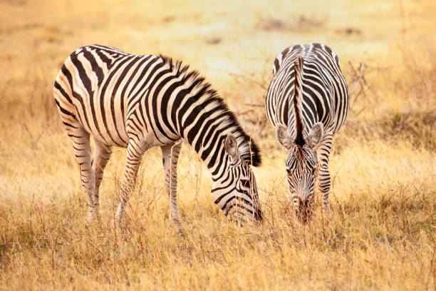

AFRICAN ZEBRA
-
There are three types of Zebra Species:
- Most Comonly Plains Zebra
- Grevys Zebra
- Mountain Zebra
-
Scientifically Their stripes perhaps serve to dazzle and confuse predators and also enables fellow zebras to identify each other.
-

Zebras are constantly on the move for fresh grass to eat and water to drink. Super stealthy creatures, they’ll travel thousands of kilometres in search of green pastures where they can fill their bellies and quench their thirst!
-
Zebras are social animals and live together in large groups, called herds. As they migrate to new feeding grounds, ‘super herds’ may form consisting of thousands of individuals. They may team up with other grazers on their travels, too, such as antelope and wildebeest.
-
Within a herd, zebras tend to stay together in smaller family groups, made up of a dominant male, several females (called ‘mares’) and their young (called ‘foals’). When they are between one and three years old, males (or ‘stallions’) leave to join ‘bachelor herds’ (all-male groups), where they stay until they’re old enough and strong enough to compete for females.
-
Their fierce fighting skills and strong social bonds help to protect zebras from predators, which include lions, leopards, hyenas and cheetahs. When under threat, these awesome animals form a semi-circle facing the attacker, and prepare to strike if need be. And if one of the group is wounded or injured, other zebras will circle around and attempt to drive off the hungry attacker. All for one and one for all! They can also launch a devastating kick which can cause something to break!